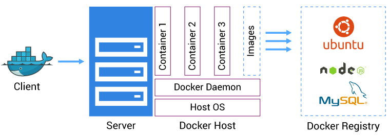

Panorama Geral do Docker
O Docker é uma plataforma de código aberto voltada à criação, empacotamento e execução de aplicações em containers. A sua arquitetura é baseada em um modelo cliente-servidor composto por três elementos principais: o Docker Client, o Docker Host e o Docker Registry.
Docker Client e Docker Daemon (Engine)
O Docker Client é o ponto de entrada do usuário. Ele envia comandos para o Docker Daemon, também conhecido como Docker Engine, que executa esses comandos, como a construção de imagens, o gerenciamento de containers e a comunicação com registries. O Docker Daemon é responsável por criar e administrar containers, que são instâncias isoladas e eficientes de uma aplicação.
Ambiente de Execução
O Docker Host é o ambiente onde o Docker Daemon opera e os containers são executados. Ele contém os recursos necessários para o funcionamento da aplicação e compartilha o kernel do sistema operacional com os containers, promovendo desempenho superior em relação a arquiteturas tradicionais de virtualização.
Armazenamento e Versionamento de Imagens
O Docker Registry é o local onde as imagens Docker são armazenadas e versionadas. O repositório mais conhecido é o Docker Hub, mas também é possível configurar registries privados. As imagens são camadas empilháveis que definem o comportamento da aplicação e suas dependências, permitindo consistência na execução em diversos ambientes (DOCKER, 2024; TURNBULL, 2014).
Rede, Orquestração e Persistência
Além disso, o Docker oferece mecanismos robustos de rede (SPACELIFT, 2024), orquestração (com ferramentas como Docker Swarm e Kubernetes), e persistência de dados, elementos essenciais para ambientes complexos, como arquiteturas baseadas em microserviços e pipelines de CI/CD
Portabilidade e Eficiência
Essa arquitetura modular e enxuta resulta em uma solução altamente portátil, escalável e eficiente, sendo adotada em larga escala por empresas que buscam otimizar seus ciclos de desenvolvimento e operações (IBM, 2024; AWS, 2024).